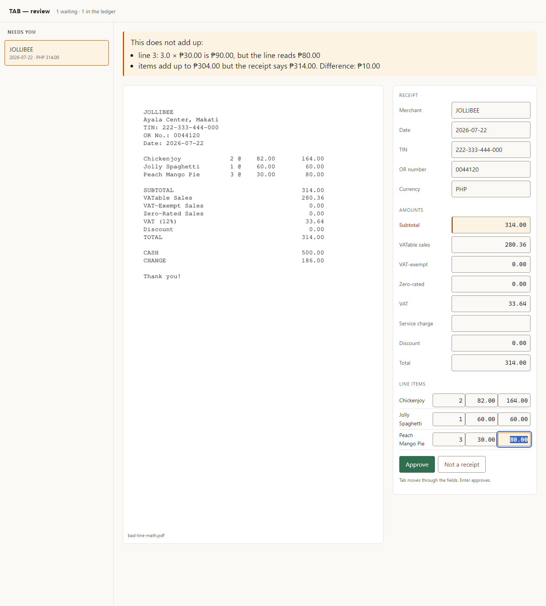

Runs on your laptop · Nothing is uploaded
Receipts that check their own arithmetic.
Point TAB at a folder. It reads every receipt, proves the numbers add up, and only interrupts you for the ones that don't.
pip install git+https://github.com/Zeref538/tab
Free and open source. Your receipts stay on your machine — there is no server for them to go to.
JOLLIBEE Ayala Center, Makati TIN 222-333-444-000 OR No. 0044120 2026-07-22 Chickenjoy 2 @ 82.00 164.00 Jolly Spaghetti 1 @ 60.00 60.00 Peach Mango Pie 3 @ 30.00 90.00 SUBTOTAL 314.00 VATable Sales 280.36 VAT (12%) 33.64 TOTAL 314.00
- every line multiplies out
- the items reach the subtotal
- VAT is 12% of the VATable sales
How it works
Drop the folder. Walk away.
A receipt already carries its own proof: the shop printed the parts and the sum on the same piece of paper. TAB just does the addition, which is why it never has to guess.
You drop receipts in a folder
Photos, scans, or e-receipt PDFs. A PDF with real text costs nothing to read — only a photograph needs the model.
no setupIt checks the maths
Do the items reach the subtotal? Is the VAT twelve percent of the VATable sales? Do the parts reach the total? No model is asked how confident it feels.
arithmetic onlyYou see the exceptions
Receipts that add up land in the ledger without a word. The rest wait on one screen with the wrong number already highlighted.
export to CSVThe screen you actually use
It shows you the paper and says what is wrong.
Not "confidence 0.62". A sentence you can act on, written from the check that failed, next to the receipt it came from.

Before you try it
What it will not do.
- It will not upload your receipts. There is no account and no server. That is also why this page is a recording rather than a box you drag files into.
- It will not guess a number it cannot check. A receipt whose arithmetic could not be tested is handed to you, not filed. A check that could not run has not passed.
- It will not read handwriting. Hand-written sari-sari slips are out of scope, and thermal paper that has faded past legibility will come to you instead.
- It does not claim a Philippine accuracy figure yet. The numbers below were measured on an Indonesian corpus. Around fifty hand-labelled Philippine receipts have to exist before any VAT or PH figure is published here.
Measured, not claimed
The numbers, and the one that matters.
Per field
| Field | Read correctly |
|---|
Three ways to read the same paper
| Reader | Filed with no human |
Filed with a wrong field |
Totals read |
Seconds each |
|---|
The ceiling
No Philippine accuracy figure appears anywhere on this page. CORD is a corpus of Indonesian receipts; it has no BIR-style VAT breakdown, no TIN, no OR number. It measures whether a small local model can read a photograph of a receipt at all, and nothing more.
Unattended
It is a step in a pipeline, not an app you sit in front of.
Point it at a folder and it works the folder. Or call it over HTTP from whatever already handles your paperwork — n8n, Make, Zapier, cron, a shell script. One POST, one answer, about a second.
The importable n8n workflow is
in the repo at n8n/tab-receipt-check.json. The one thing worth
copying from it: the branch reads verdict, never a confidence
number. There isn’t one to read. A model that tells you it is almost
certain will state a wrong total with exactly that much conviction, so the
only thing worth routing on is arithmetic that either reconciles or
doesn’t.
A real run
Six receipts, recorded when this page was built.
Nothing below was written by hand. If the software changes its mind about a receipt, this changes with it. The vision model is switched off so the recording rebuilds on any machine — which is why the scan stops where it does.